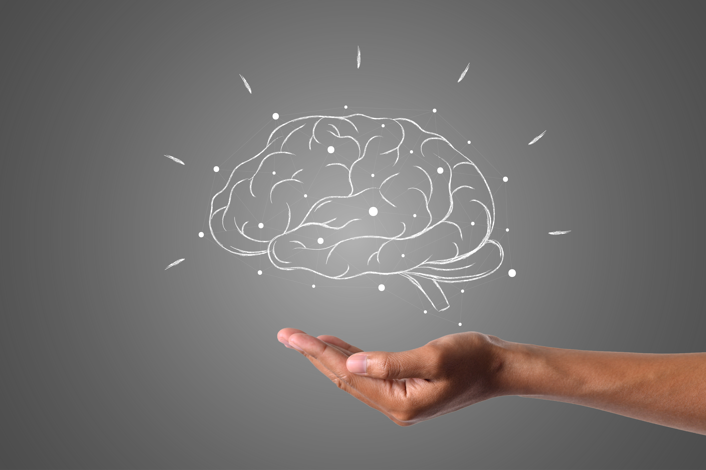

The Human Brain
Discover the Complexsities of the Human Brain and its Key Role behaviour
|
Home page:Introduction to
Neuroscience and Brain Funtion
At its most basic, neuroscience is the study of the nervous system – from structure to function, development to
degeneration, in health and in disease. It covers the whole nervous system, with a primary focus on the brain.
Incredibly complex, our brains define who we are and what we do. They store our memories and allow us to learn
from them. Our brain cells and their circuits create new thoughts, ideas and movements and reinforce old ones.
Their individual connections (synapses) are responsible for a baby’s first steps and every record-breaking
athletic performance, with each thought and movement requiring exquisitely precise timing and connections.
Human brains have 86 billion neurons (8.6 x 1010); neuroscientists investigate how these connect with each other
and with other parts of the nervous system and the rest of the body. King’s Neuroscience seeks to understand the
brain in health and disease. We want to find out how our nervous systems develop, and what can go wrong.
Combining different approaches with new technologies, we lead research into treatments for diseases and
disorders affecting the nervous system. We focus on key conditions affecting the nervous system, from childhood
epilepsy through to Alzheimer’s disease
|

|

|
|
Visual Representaion of the Brain
Home page:Introduction to
Neuroplasticity: How the Brain Adapts and Changes
Neuroplasticity, also known as neural plasticity or brain plasticity, is a process that involves adaptive
structural and functional changes to the brain. It is defined as the ability of the nervous system to change its
activity in response to intrinsic or extrinsic stimuli by reorganizing its structure, functions, or connections
after injuries, such as a stroke or traumatic brain injury (TBI). This activity describes neuroplasticity, the
evaluation and management of neuroplasticity, and reviews the role of the interprofessional team in improving
care for patients.
Human brains have 86 billion neurons (8.6 x 1010); neuroscientists investigate how these connect with each other
and with other parts of the nervous system and the rest of the body. King’s Neuroscience seeks to understand the
brain in health and disease. We want to find out how our nervous systems develop, and what can go wrong.
Combining different approaches with new technologies, we lead research into treatments for diseases and
disorders affecting the nervous system. We focus on key conditions affecting the nervous system, from childhood
epilepsy through to Alzheimer’s disease
Ilustration of neuroplasticity of the Brain
- Mechanisms of Neuroplasticity
- Neuronal Regeneration/Collateral Sprouting
- Functional Reorganization
- Factors Influencing Neuroplasticity
- Sensory stimuli
- Stress
- Injury
- Diet
- Drugs
- Social relationships
Mental Health : Overview of Mental Health and Its Importance
Mental health includes our emotional, psychological, and social well-being. It affects how we think, feel, and
act. It also helps determine how we handle stress, relate to others, and make healthy choices.1 Mental health is
important at every stage of life, from childhood and adolescence through adulthood.
Why is mental health
important for overall health?
Mental and physical health are equally important components of overall health. For example, depression increases
the risk for many types of physical health problems, particularly long-lasting conditions like diabetes, heart
disease, and stroke. Similarly, the presence of chronic conditions can increase the risk for mental illness.
Ilustration of Mental health in our lives
- A Stronger Ability to Cope With Life’s Stressors
- A Positive Self-Image
- Healthier Relationships
- Better Productivity
Key Barain Funtions and
there importance
| Funtion |
Description |
Imprtance |
| Cognition |
The mental action of aquiring knowlege and understanding |
Critiacal for deision making and probelm solving |
| Emotion Regulation |
The abiltiy to manage and respond to emotional and undertanding |
Essentainl for mental and social interraction |
| Memort |
The process of encoding, storing and retrieving information |
Viatl for adapting and to new Skills |
Concluion
Your brain is an essential organ that allows you to perceive and interact with the world around you. It receives
and interprets all the sensory information you encounter. A range of conditions can affect your brain. You can
support your brain health by sleeping well, eating a healthy diet, exercising and making other healthy lifestyle
choices. If you suspect that you or a loved one has symptoms related to a brain condition, speak with a
healthcare provider.
@ 2024 The Human Brain
For more Information on neorucience, visit Cleavland Clinic
|